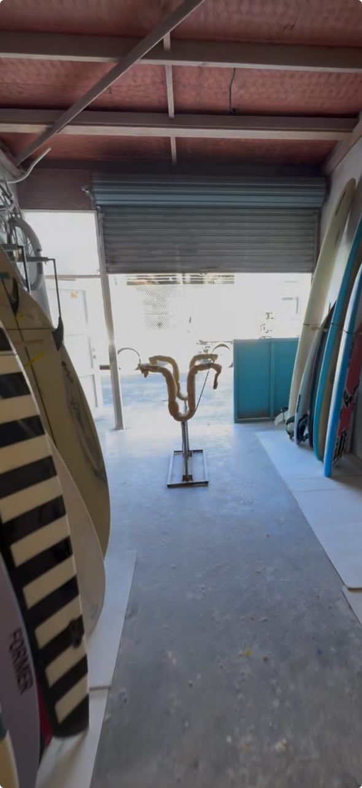

Since 1974
The Mount's Original Surf Shop
In 1974, the Mount's very first surfshop — Solar Surfshop — opened its doors. Mike shaped the boards, Mum made Balinese clothes, and a legacy was born.
Today, CJ and Mike carry on that tradition — a father-and-son operation with decades of experience. CJ was the first person to run a Mount Maunganui surf school, and he's been fixing boards for over 20 years.
When you bring your board to Solar Surf, you're putting it in the hands of people who live and breathe the Mount surf culture.
